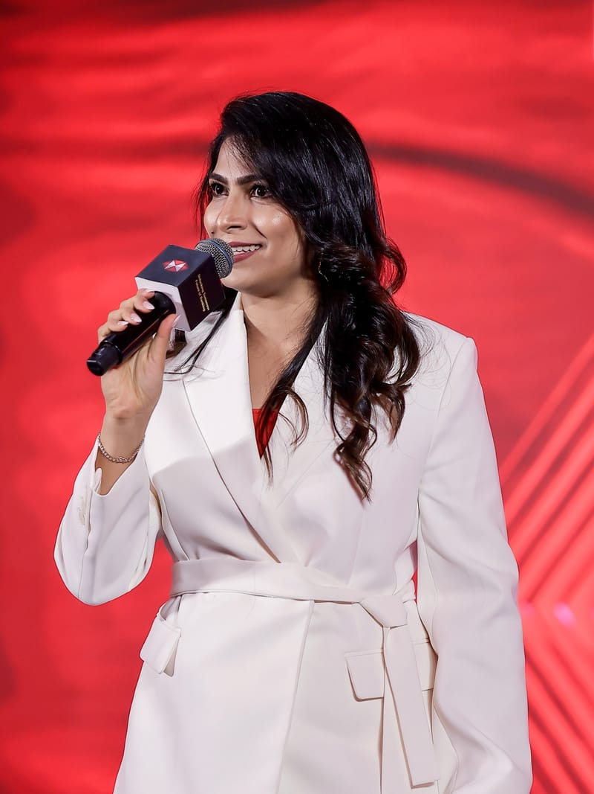
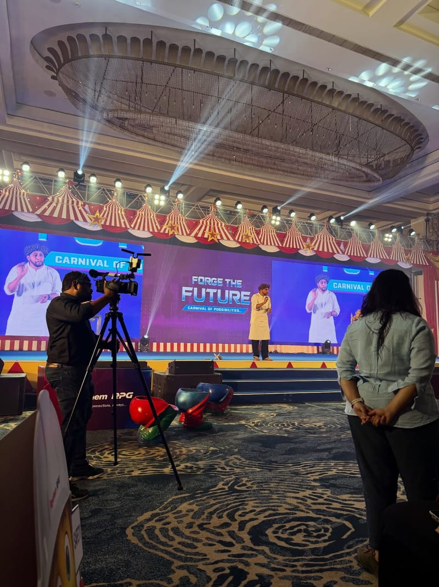
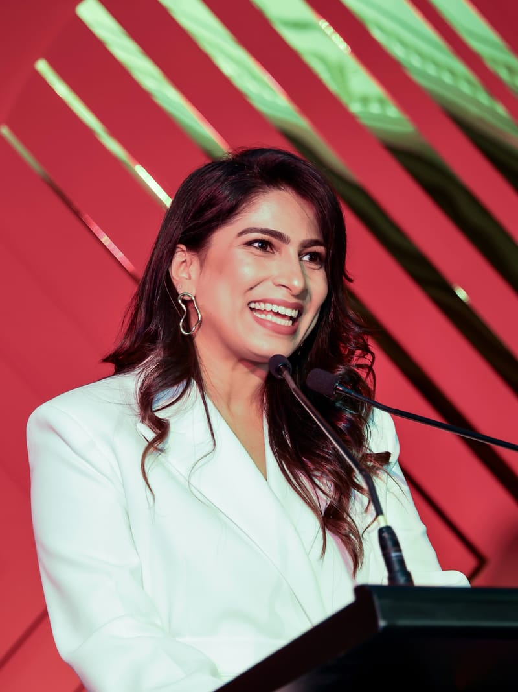
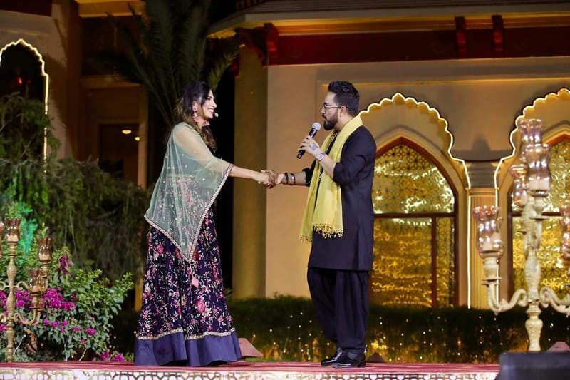
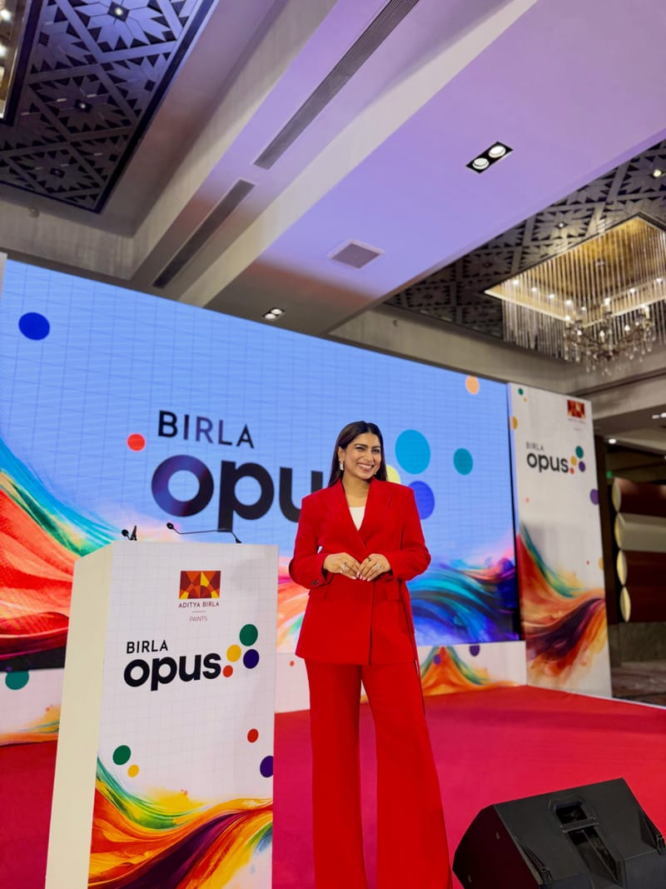
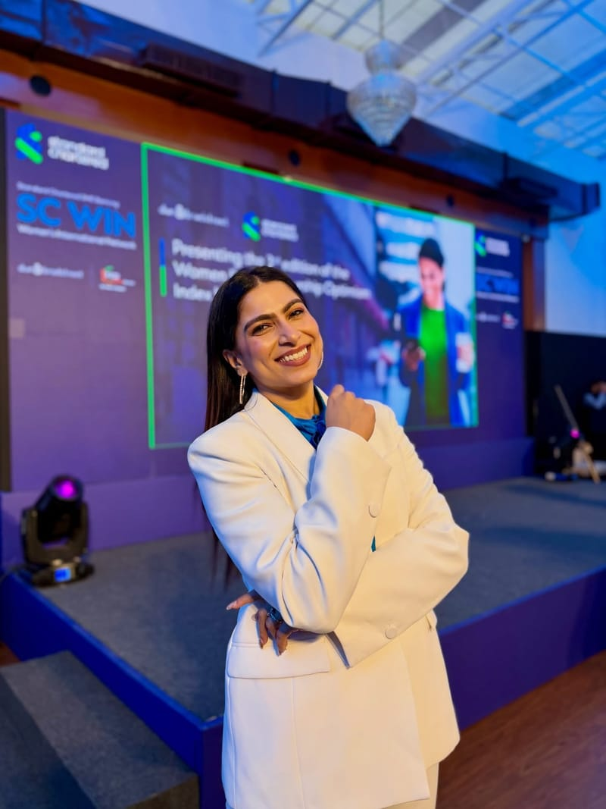

About
Nisha Shetty is a presenter, anchor and emcee based in Mumbai. She has hosted full-time since 2016, in English and Hindi.
- Based in Mumbai
- English and हिन्दी
- Full-time since 2016

Her work runs from awards nights, sales conferences and dealer meets to red carpets, press conferences, pageants and virtual formats, in India and on programmes abroad.
She works with event agencies and with the companies they produce events for. The full, dated record is on the Work page, and her clips are on Watch.
How she works.
Prepares with the client
Meetings and scripting come before the stage, in India and abroad: her July 2025 programme in Tbilisi, Georgia, is logged as events, meetings and scripting. At a 2022 television press conference, the guest of honour sat with her to go through the script.
Works from cue cards
Cue cards are in her hand in photographs from 2016 to 2026: an awards night in Mumbai in 2022, between segments in 2024, the red programme card at HSBC’s “Unlocking Tomorrow” in 2026.
When the plan changes
Running orders move. After hosting ICICI Prudential Life’s virtual awards in 2021, she wrote about handling unexpected changes on stage:
“…the composure and the presence of mind that I have in the most difficult situations while hosting virtually has made me even more confident.”
Works inside the production
She works with event agencies, production teams and camera crews, and alongside a co-host where the programme calls for one, as at The Dorby Dialogue in Udaipur, 2026. Where an agency brought her in, the record says so.

The range, in pictures.
A red gown for a conference stage in Mumbai, a festival stage in Tokyo, Indian formal wear for a television press conference, a white gown for a launch in Kolkata.
Select any photo to see it larger.












In her words.
[SHORT BIO IN HER OWN WORDS — TO BE WRITTEN BY HER]
“No matter how many stages I host, this feeling never gets old.”
“Always special hosting for Raychem, one of my favourite clients to work with.”
Working with an agency or an event team?
Formats, languages, bios and how to check a date, in one place.